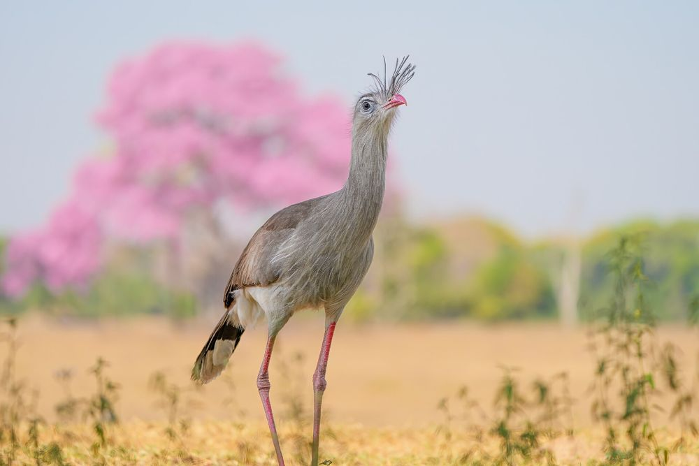

Mähnenwolf
Chrysocyon brachyurus
Der größte Hundeartige Südamerikas. Jagt nachts und frisst auch viele Früchte, etwa den Wolfsapfel, und verbreitet so die Samen.
Gefährdet (ICMBio)
Fotos von Tieren aus dem zweitgrößten Biom Brasiliens, um Menschen der Natur näherzubringen und sie zu schützen.
Zur GalerieEinige der Tiere, die uns auf unseren Expeditionen am häufigsten begegnen.
Chrysocyon brachyurus
Der größte Hundeartige Südamerikas. Jagt nachts und frisst auch viele Früchte, etwa den Wolfsapfel, und verbreitet so die Samen.
Gefährdet (ICMBio)
Myrmecophaga tridactyla
Frisst mit seiner langen Zunge, bis zu 60 cm, Ameisen und Termiten. Er hat keine Zähne.
Gefährdet (ICMBio)
Ara ararauna
Lebt in Paaren und nistet in Höhlen abgestorbener Palmen wie der Buriti.
Er ist die artenreichste Savanne der Welt und zugleich eines der Biome Brasiliens, die am meisten ursprüngliche Vegetation verloren haben.
Ausflüge in kleinen Gruppen, mit lokalem Guide und dem Ziel, die Tiere zu beobachten, ohne sie zu stören.
Expeditionen ansehen